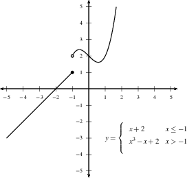
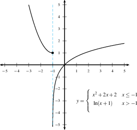
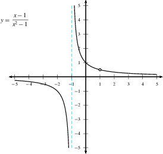

Continuity and the Intermediate Value Theorem
Definition of Continuity
what is happening when \(x\) is slightly less than \(a\) and what is happening when \(x\) is slightly greater than \(a\). Thus there are three conditions inherent in this definition of continuity. A function is continuous at \(a\) if the limit as \(x\to a\) exists, and \(f(a)\) exists, and this limit is equal to \(f(a)\). This means that the following three values are equal: \(\lim_{x \to a^-} f(x)\qquad=\qquad f(a)\qquad=\qquad\lim_{x \to a^+} f(x\) I.e. the value as \(x\) approaches \(a\) from the left is the same as the value as \(x\) approaches \(a\) from the left (the limit exists) which is the same as the value of \(f\) at \(a\).
If any of these quantities is different, or if any of them fails to exist, then we say that \(f(x)\) is discontinuous at \(x=a\), or that \(f(x)\) has a discontinuity at \(x=a\).
What does this mean graphically? If you trace \(f\) with a pencil from left to right, as you approach \(x=a\), you are at some height \(L\) (because \(\displaystyle\lim_{x\to a^-}f(x)=L\). As you go through the \(x\)-value \(a\), your height is also \(L\) (because \(f(a)=L\)). Now as you keep going with your pencil, you are beginning this last stretch at height \(L\) (because \(\displaystyle\lim_{x\to a^+}f(x)=L\)).
DO: Sketch \(f(x)=\sqrt x\) and let \(a=4\). Find \(f(a), \displaystyle\lim_{x\to a^-}f(x)=L\), and \(\displaystyle\lim_{x\to a^+}f(x)\). Now, follow along your graph as stated in the previous paragraph, looking at each condition as you go. Is \(f(x)=\sqrt x\) continuous at \(x=a\)?
Now, more interestingly, consider \(\displaystyle\frac{x^2-1}{x-1}\) in this video:
YouTube video
Definition
A function \(f\) is continuous from the right at \(x=a\) if \(\displaystyle \lim_{x \rightarrow a^+} f(x) = f(a)\), and is continuous from the left at \(x=a\) if \(\displaystyle \lim_{x \rightarrow a^-} f(x) = f(a)\), and is continuous on an interval \(I\) if it is continuous at each interior point of \(I\), is continuous from the right at the left endpoint (if \(I\) has one), and is continuous from the left at the right endpoint (if \(I\) has one).
YouTube video
Continuity and piecewise defined functions
If a function is defined in pieces, and if the definition changes at \(x=a\), then we use the definition for \(x \lt a\) to compute \(\displaystyle{\lim_{x \to a^-} f(x)}\), we use the definition at \(x=a\) to compute \(f(a)\), and the definition for \(x \gt a\) to compute \(\displaystyle{\lim_{x \to a^+} f(x)}\), and then we compare the three quantities.
Example: If \(f(x) = \begin{cases} 1-x & x \lt 0, \\ x^2 & x \ge 0, \end{cases}\) then
Then \(\displaystyle\lim_{x \to 0^-} f(x)= \lim_{x \to 0^-} (1-x) = 1,\qquad\displaystyle\lim_{x \to 0^+} f(x) = \lim_{x \to 0^+} (x^2) = 0\qquad\), and \(f(0) = 0^2 = 0.\)
DO: Check that the values above are correct, using the given piecewise definition of \(f\).
Since the limits from the left and right do not agree, the limit does not exist, and the function is discontinuous at \(x=0\).
DO: Consider the limits above, and try to sketch what happens to the graph of \(f\) near \(x=0\). Don’t worry about other parts of the function; use only the limits as \(x\to 0^-\) and as \(x\to 0^+\), and \(f(0)\), not the definition of the function.
Continuity and piecewise defined functions
If a function is defined in pieces, and if the definition changes at \(x=a\), then we use the definition for \(x \lt a\) to compute \(\displaystyle{\lim_{x \to a^-} f(x)}\), we use the definition at \(x=a\) to compute \(f(a)\), and the definition for \(x \gt a\) to compute \(\displaystyle{\lim_{x \to a^+} f(x)}\), and then we compare the three quantities.
Example: If \(f(x) = \begin{cases} 1-x & x \lt 0, \\ x^2 & x \ge 0, \end{cases}\) then
Then \(\displaystyle\lim_{x \to 0^-} f(x)= \lim_{x \to 0^-} (1-x) = 1,\qquad\displaystyle\lim_{x \to 0^+} f(x) = \lim_{x \to 0^+} (x^2) = 0\qquad\), and \(f(0) = 0^2 = 0.\)
DO: Check that the values above are correct, using the given piecewise definition of \(f\).
Since the limits from the left and right do not agree, the limit does not exist, and the function is discontinuous at \(x=0\).
DO: Consider the limits above, and try to sketch what happens to the graph of \(f\) near \(x=0\). Don’t worry about other parts of the function; use only the limits as \(x\to 0^-\) and as \(x\to 0^+\), and \(f(0)\), not the definition of the function.
Types of Discontinuities
There are several ways that a function can fail to be continuous. The three most common are:
- If \(\displaystyle{\lim_{x \to a^+} f(x)}\) and \(\displaystyle{\lim_{x \to a^-} f(x)}\) both exist, but are different, then we have a jump discontinuity.
 - If either \(\displaystyle{\lim_{x \to a^+} f(x)} = \pm \infty\) or \(\displaystyle{\lim_{x \to a^-} f(x)} = \pm \infty\), then we have an infinite discontinuity, also called an asymptotic discontinuity.
 - If \(\displaystyle{\lim_{x \to a^+} f(x)}\) and \(\displaystyle{\lim_{x \to a^-} f(x)}\) exist and are equal (and finite), but \(f(a)\) happens to be different (or doesn’t exist), then we have a removable discontinuity, since by changing the value of \(f(x)\) at a single point we can make \(f(x)\) continuous.

The Intermediate Value Theorem
The Intermediate Value Theorem (IVT) talks about the values that a continuous function has to take:
Intermediate Value Theorem: Suppose \(f(x)\) is a continuous function on the interval \([a,b]\) with \(f(a) \ne f(b)\). If \(N\) is a number between \(f(a)\) and \(f(b)\), then there is a point \(c\) in \((a,b)\) such that \(f(c)=N\).
In other words, to go continuously from \(f(a)\) to \(f(b)\), you have to pass through \(N\) along the way.
DO: Before watching the following video, sketch a graph of a continuous function \(f\), label some \(x\) values \(a\) and \(b\) and pick any \(N\) as specified, and see if you can tell what the IVT is saying.
In this video we consider the theorem graphically and ask: What does it do for us?
We can use the IVT to show that certain equations have solutions, or that certain polynomials have roots.
DO: Work through the following example carefully, on your own, after watching the video, referring to the IVT to confirm each step. Sketch \(f\) near the \(a\) and \(b\) values used.
Example: It is very challenging to find the roots of \(f(x)=x^4+x-3\). (Try it!) However, we can use the IVT to see that it has roots: Since \(f(-2)=11>0>f(0)=-3\), we can let \(N=0\) and use the IVT to see that there has to be an \(x\)-value \(c\) between \(a=-2\) and \(b=0\) with \(f(c)=N=0\), and thus that \(c\) is a root of \(f\). Likewise, since \(f(0)=-3 < 0 < f(2)=15\), there has to be an \(x\)-value \(d\) between \(0\) and \(2\) with \(f(d)=0\). We have determined that \(f(x)\) has at least two roots. We don’t know exactly what these roots are, but we know they exist, and that \(c\) is in the interval \((-2,0)\), and that \(d\) is in the interval \((0,2)\).
Summary of using continuity to evaluate limits
The theorems, restated below, give an easy way to determine if a function is continuous.
Theorem:
The following functions are continuous on their domain: * polynomials * rational functions * root functions * trig functions and their inverses * exponential functions * logarithmic functions
Theorem:
If \(f\) and \(g\) are both continuous on an interval \(I\), then * \(f+g\) * \(f-g\) * \(f\cdot g\) * \(\tfrac{f}{g}\), if \(g\ne0\)
are also continuous on \(I\).
This is good, since we can use continuous functions to evaluate limits: \(\lim_{x\to a}\text{(any continuous function }f)=f(a),\) making it easy to evaluate the limit.